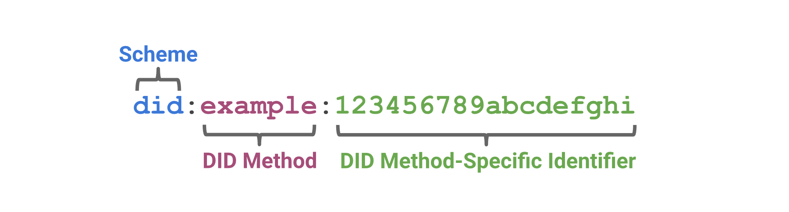
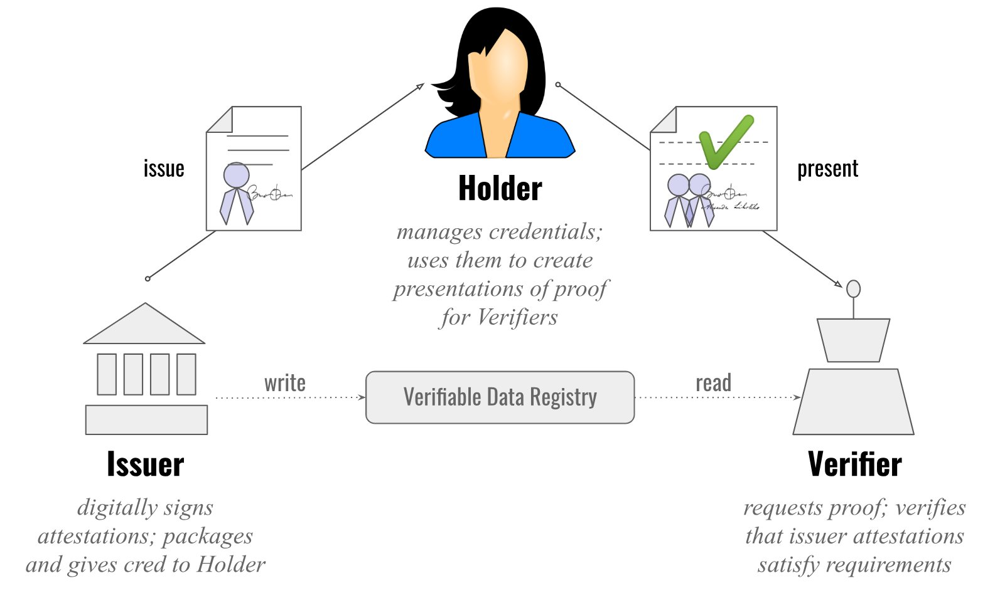
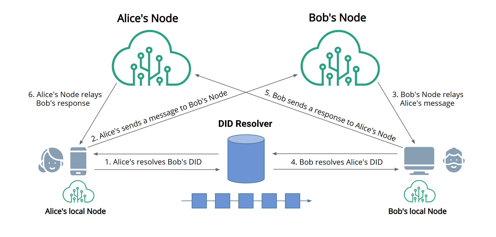
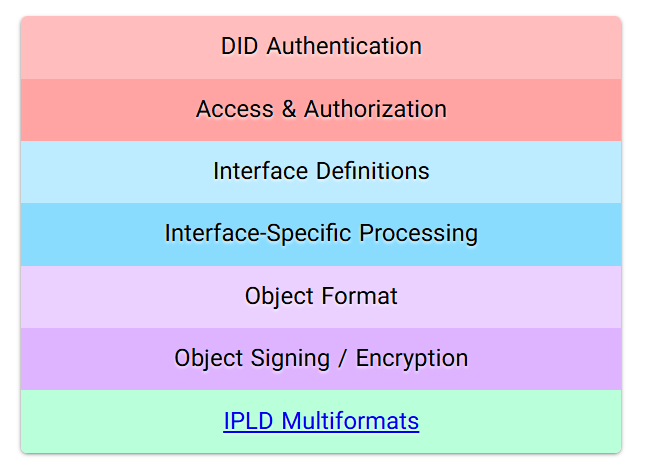
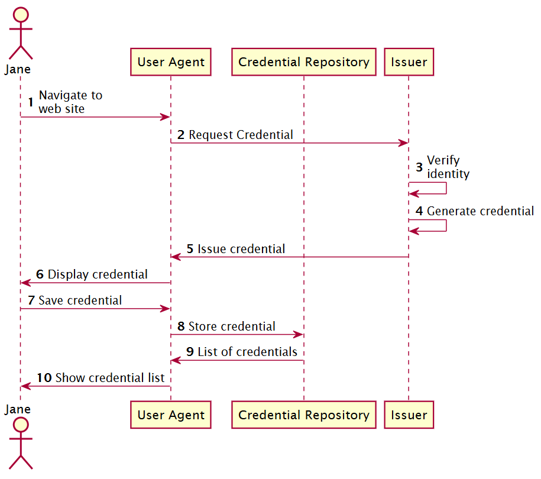

The internet has evolved through phases — from static pages to interactive apps
to decentralized visions — and now we’re being pitched a “Web5”. The term may
feel gimmicky (why skip “Web4”?), but it reflects a set of ideas about data,
identity, applications and decentralization. As a smart-contract/cross‐chain developer,
it’s worth understanding Web5’s claim: giving you control of your identity and data, rather than the platform or chain owning it.
With Web2 we got “read/write” (social media, user‐generated content).
With Web3 we got “read/write/own” (crypto, NFTs, DeFi).
Web5 proposes “user owns identity & data; apps are permissioned; decentralized nodes instead of central silos”. We'll dig into those claims.
If you’re building bridges, tokenization, smart contracts and identity systems — these architectural shifts may influence your stack.
What is Web5?
At its core, Web5 is a vision proposed (not yet fully implemented) by TBD; a subsidiary of Block, Inc., the firm co-founded by Jack Dorsey
for a “Decentralized Web Platform” where users truly control identity and data.
One article: “Web5 is a decentralized version of the internet where users store their own personal information and can revoke access at will.”
Another: “the autonomous control of authentic data and relationships.”
According to TBD’s own pitch:
“Web5 is a Decentralized Web Platform that enables developers to leverage Decentralized Identifiers,
Verifiable Credentials, and Decentralized Web Nodes to write Decentralized Web Apps, returning ownership
and control over identity and data to individuals.”
How Web5 is different than Web2 and Web3
Web2 (Read/Write)
Data & identity:
centralized platforms hold user data, identity, profiles. Users log in with platform accounts; platforms decide terms of service.
Ownership:
Users produce content, but platforms control distribution, monetization, access.
Tokens:
Rare/absent (except maybe internal point systems).
Application architecture:
Client-server, big cloud services, centralized databases.
Decentralization:
Very low. Data silos, platform APIs, gatekeepers.
Example:
You sign up on Instagram; your profile, photos, followers are on Instagram’s servers; you can’t easily port your profile and social graph to another service.
Web3 (Read/Write/Own)
Data & identity:
Introduction of blockchain, wallets, cryptographic keys. Identity often still platform-connected (wallet = identity). Platforms claim to be open, but many still rely on centralized services.
Ownership:
You can own digital assets (NFTs, tokens), you can use DeFi protocols. But data often still managed in centralized storages or wallets controlled by services.
Tokens:
Major. Structures built around utility tokens, governance tokens, DAOs.
Application architecture:
Smart contracts (Ethereum, Solana, etc), DApps built on chain, IPFS/Filecoin and other decentralized storage attempts.
Decentralization:
Improved vs Web2, but still significant centralized dependencies (exchanges, custodial wallets, token-governance, venture capital influence). Example: Many “decentralized” apps still offload data to central-servers or rely on hosted wallet services.
Example:
You connect MetaMask to a DApp; you pay gas; you receive an NFT; you still rely on some centralized metadata, marketplace, or third-party servers.
Web5 (User-centric, Data & Identity Sovereignty)
Data & identity:
Shift to user-owned identity (DID) and user-controlled data storage (DWNs). Instead of platform controlling your data, you hold a DID and a node where your data lives.
Ownership:
Not just assets, but the identity, credentials, data flows. You decide which apps access your node; you revoke access.
Tokens:
De-emphasized. Web5 proponents argue you don’t need native utility tokens or heavy token-governance to enable decentralization of identity/data.
Application architecture:
Decentralized Web Apps (DWAs) running on top of DWNs and DIDs. Data is decoupled from applications (apps request access rather than owning the data). Distributed nodes may store and process data.
Decentralization:
Aiming for stronger decentralization — data not owned by centralized silos, identity not tied to single platform, no gatekeeper controlling format of your data. Example: You move from one service to another while retaining your identity and data, because they live on your node.
Example:
From the TBD pitch: you keep your travel itinerary data in your personal node; you grant airline, hotel, car-rental providers access; you revoke it later; you switch service providers without losing your identity/profile.
Feature
Web2
Web3
Web5
Identity
Centralized
Wallets & Social Login (Mixed)
Self-sovereign DIDs under User Control
Data Ownership
Platform Owns Data
User Owns Some Assets but Data often Platform-Owned
User Owns Data & Assets
Token Focus
Minimal
Strong Emphasis
Much Less Emphasis; Identity/Data Primary
App Architecture
Client-Server, Central Storage
Centralized and Decentralized-Data Storage
Decentralized With Data under User Control
Decentralization
Doesn’t Exist
Medium to High
Aimed Higher — Data & Identity Decentralized by Default
Pillars of Web5
What are the foundational technologies that Web5 rests on? Various sources list
three, or sometimes four. Let’s catalog them, define each, and then examine how
they work with examples and how they might integrate into the tech stack.
Decentralized Identifiers (DIDs)
Definition & Purpose:
DIDs are globally persistent identifier that does not require a centralized registration authority and is often generated
and/or registered cryptographically. W3C standardized DIDs allow self-sovereign identity.
Web5 uses DIDs so you hold your identity in your wallet/agent, and you present that identity to apps, services.
Design Overview:A DID is a simple text string consisting of three parts:
The DID URI Scheme Identifier
The Identifier for the DID Method
The DID Method-Specific Identifier

Figure 1: DID Schema Example
Architecture OverviewFigure 2: DID Architecture Overview and the Relationship of the Basic Components
DIDs and DID URLs
A Decentralized Identifier is a URI composed of three parts: the scheme did:, a method identifier, and a unique, method-specific
identifier specified by the DID method.
DID Document:
A DID Document contains information associated with a DID, including public keys, authentication methods, service endpoints, and other metadata.
DIDs are resolvable to DID documents.
DID URL extends the syntax of a basic DID to incorporate other standard URI components such as path, query, and fragment in order to locate a particular resource.
for example, a cryptographic public key inside a DID document, or a resource external to the DID document.
DID Subjects
The subject of a DID is he entity identified by the DID.
The DID subject might also be the DID controller.
Anything can be the subject of a DID: person, group, organization, thing, or concept.
DID Controllers
The controller of a DID is the entity (person, organization, or autonomous software) that has the capability—as defined by a DID method—to make changes to a DID document. A DID might have more than one controller.
Verifiable Data Registries
Any system that supports recording DIDs and returning data necessary to produce DID documents is called a verifiable data registry regardless of the specific technology used.
DID Documents
DID documents contain information associated with a DID. They typically express verification methods, such as cryptographic public keys, and services relevant to interactions with the DID subject.
DID Methods
Are the mechanism by which a particular type of DID and its associated DID document are created, resolved, updated, and deactivated.
DID Resolvers and DID Resolution
Is a system component that takes a DID as input and produces a conforming DID document as output.
The steps for resolving a specific type of DID are defined by the relevant DID method specification
DID URL Dereferencers and DID URL Dereferencing
Is a system component that takes a DID URL as input and produces a resource as output.
Verifiable Credentials (VCs)
Definition & Purpose:
Verifiable Credentials are cryptographically signed digital credentials issued by an authority – "Issuer", and presented by a holder to a verifier.
They follow standards, e.g., W3C Verifiable Credentials Data Model. In Web5 they are used to assert facts like education degree, membership, travel pass, etc tied to your DID.
Ecosystem Overview:
Verifiable Credentials are cryptographically signed digital credentials issued by an authority – "Issuer", and presented by a holder to a verifier.
They follow standards, e.g., W3C Verifiable Credentials Data Model. In Web5 they are used to assert facts like education degree, membership, travel pass, etc tied to your DID.

Figure 3: The roles and information flows forming the basis for Verifiable Credentials
Holder
A holder is often, but not always, a subject of the verifiable credentials they are holding. Holders store their credentials in credential repositories.
Issuer
A role an entity can perform by asserting claims about one or more subjects, creating a verifiable credential from these claims, and transmitting the verifiable credential to a holder.
Subject
A thing about which claims are made. Example subjects include human beings, animals, and things.
Verifier
A role an entity performs by receiving one or more verifiable credentials, optionally inside a verifiable presentation for processing.
Verifiable Data Registry
A role a system might perform by mediating the creation and verification of identifiers, verification material, and other relevant data, such as verifiable credential schemas, revocation registries, and so on, which might require using verifiable credentials.
Decentralized Web Nodes (DWNs)
Definition & Purpose:
DWNs are personal data stores that live in a decentralized network rather than centralized servers.
They act as the user’s personal node for storing data, managing access, messaging, and synchronizing across services.
The user controls it. In Web5 it’s the storage and message layer underpinning identity/data sovereignty.
Architecture Overview:
A Decentralized Web Node (DWN) is a personal data store that an individual or entity controls.
It serves as a decentralized server where the user's data is stored, managed, and shared according to their preferences.

Figure 4: Decentralized Web Node Architecture Overview
Data Storage
DWNs store user data in a decentralized manner, eliminating reliance on centralized servers.
Access Control
Users have granular control over who can access their data, granting and revoking permissions as needed.
Interoperability
DWNs are designed to work with various applications and services, allowing seamless data sharing across platforms.
Decentralized Web Node
A decentralized personal and application data storage and message relay node, as defined in the DIF Decentralized Web Node specification. Users may have multiple Nodes that replicate their data between them.
Decentralized Identifiers
Unique ID URI string and PKI metadata document format for describing the cryptographic keys and other fundamental PKI values linked to a unique, user-controlled, self-sovereign identifier in a target system (e.g., blockchain, distributed ledger).
Technical Stack:
Decentralized Web Nodes are comprised of the following component layers, each of which is defined in this specification to ensure multiple Decentralized Web Node implementations can be used together and operate as a single logical unit for users.

Figure 5: Decentralized Web Node Technical Stack
Protocols:
Protocols are used to describe common rules that DWNs will follow when dealing with specific types and structures of data. Through Protocol Definitions a DWN Owner can define how a protocol should behave.
The definition defines types, as well as their structure allowing for hierarchial relationships for data types, as well as roles, object capabilities, and enforced limitations such as data payload size.
This will promote interoperability between users and apps, avoiding bespoke implementation details and interactivity often needed within traditional application development.

Figure 6: Simplified Protocol Example with Roles
An Owner can assign a viewer role to an external actor.
A Viewer must have the schema https://example.com/schemas/viewer.
A Viewer must have the dataFormat of application/json.
Only the DWN Owner can add a Viewer.
A Viewer can read and queryImages as well as Image Metadata.
An Owner can assign a writer role to an external actor.
A Writer must have the schema https://example.com/schemas/writer.
A Writer must have the dataFormat of application/json.
A Writer can create Images.
A Writer can delete and update Images which they authored.
The Author of an Image can create Image Metadata for that Image.
The Author of an Image can delete or update the Image Metadata which they authored.
Usage Examples of Web5
Let’s ground this in real scenarios. Since Web5 is early, many are conceptual or prototypes. But for you as a blockchain dev building real stuff, you can envision how your systems might align.
Example 1: Cross‐chain token bridge with identity & data sovereignty
Imagine a cross-chain bridge where users connect via DIDs, and their transaction history, preferences, and KYC data are stored in their DWN.
When they bridge assets, the bridge app requests access to their node for necessary data, but the user retains control.
No centralized service holds their identity or transaction logs; they can switch bridges without losing history.
Example 2: Tokenized Real-World Asset Marketplace
A marketplace for tokenized real-world assets (like real estate, art) where ownership credentials are issued as Verifiable Credentials tied to user DIDs.
Buyers and sellers interact through DWNs, sharing asset data, transaction history, and ownership proofs without relying on a central authority.
Users can manage their asset portfolios across multiple marketplaces seamlessly.
Example 3: Developer Relations & Protocol Support Portal
A developer portal where users log in with their DID, and their contributions, reputation, and access rights are managed via Verifiable Credentials.
Their data (contributions, feedback history) is stored in their DWN, allowing them to switch between different protocol support portals without losing their profile or history.